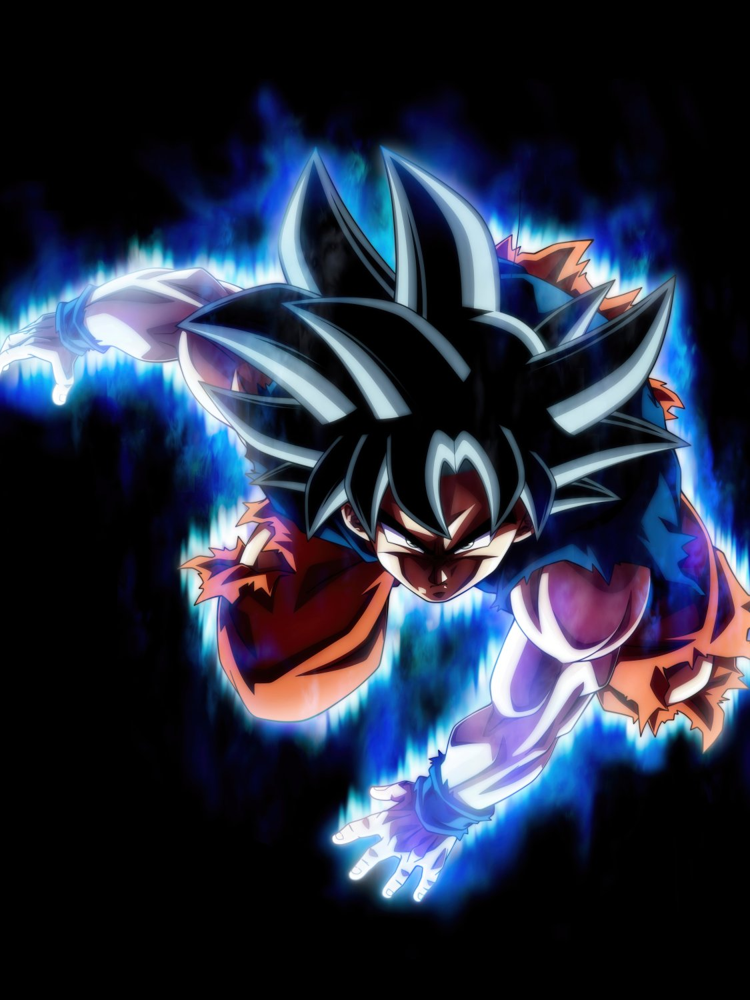
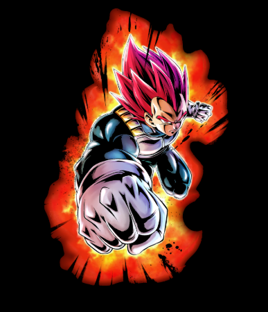
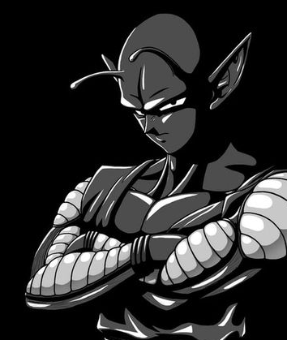
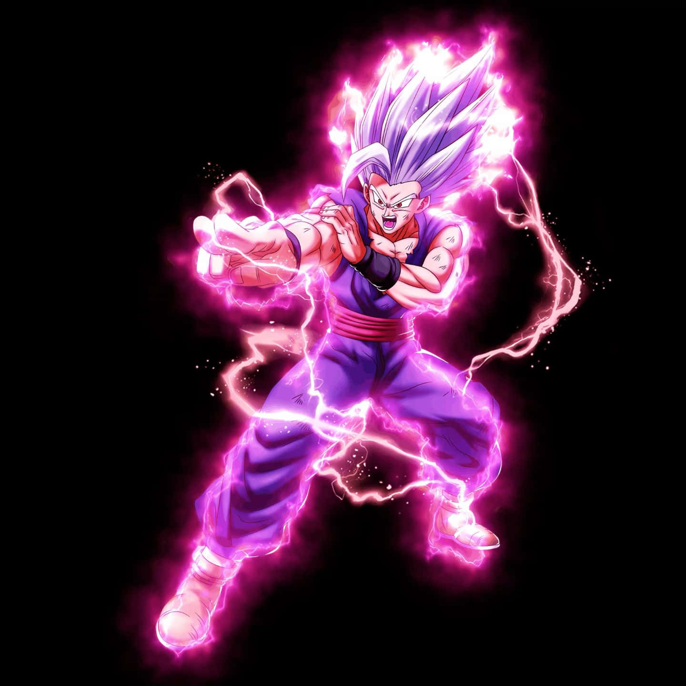
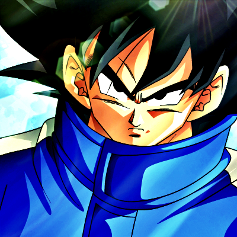
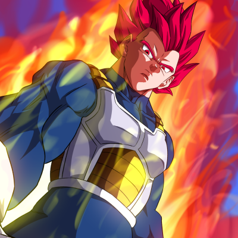
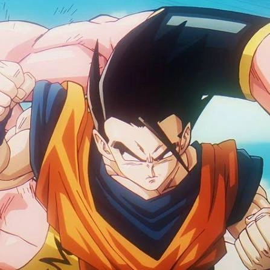
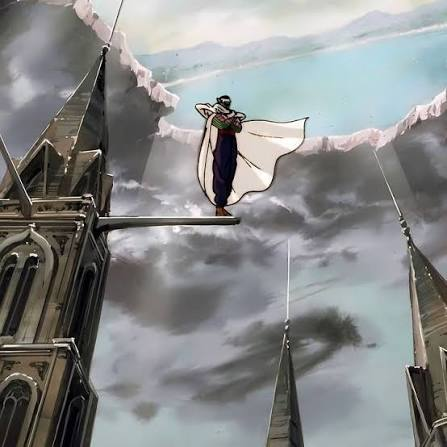

Personajes
Goku, el saiyan criado en la tierra
Son Goku es el protagonista de Dragon Ball, un guerrero saiyajin criado en la Tierra que se caracteriza por su personalidad alegre, inocente y despreocupada. Es alguien extremadamente bondadoso, humilde y optimista, que suele ver lo mejor de las personas, incluso en algunos de sus antiguos enemigos. Su mayor pasión es luchar contra oponentes poderosos, superar sus propios límites y descubrir hasta dónde puede llegar su fuerza. A pesar de ser uno de los guerreros más poderosos del universo, Goku no lucha por la fama, el reconocimiento ni el deseo de dominar a los demás. Su motivación principal es mejorar constantemente, disfrutar de los desafíos y proteger a las personas que ama cuando están en peligro. Es valiente, perseverante y posee una gran capacidad para aprender y adaptarse durante los combates. Sin embargo, también tiene defectos: es ingenuo, algo distraído y demasiado impulsivo cuando se presenta la oportunidad de enfrentarse a un rival fuerte. En ocasiones, su amor por la lucha lo lleva a tomar decisiones arriesgadas. Aun así, su buen corazón, su espíritu indomable y su deseo constante de superación lo convierten en un héroe que demuestra que la verdadera grandeza no consiste únicamente en ser poderoso, sino también en nunca dejar de crecer.

Haz click para volver aqui
Vegeta, el principe de los saiyans
Vegeta es uno de los protagonistas de Dragon Ball, un orgulloso guerrero saiyajin y príncipe de su raza que se caracteriza por su personalidad seria, arrogante y competitiva. Desde su infancia, fue criado bajo la creencia de que los saiyajin eran una raza superior, por lo que desarrolló una enorme obsesión por la fuerza, el poder y el orgullo de su linaje. Su rivalidad con Goku se convierte en uno de los motores principales de su crecimiento, pues constantemente busca superarlo y demostrar que es el mejor guerrero. A pesar de su carácter frío, su temperamento explosivo y su dificultad para expresar sus sentimientos, Vegeta experimenta una profunda evolución personal. Poco a poco, aprende a valorar a su familia, a proteger a sus seres queridos y a luchar por algo más que su propio orgullo. Aunque rara vez muestra abiertamente su lado afectuoso, sus acciones demuestran que es capaz de sacrificarse por quienes ama. Vegeta es un guerrero disciplinado, perseverante y extremadamente determinado, cuya fortaleza no proviene únicamente de su poder, sino también de su capacidad para levantarse después de cada derrota. Su orgullo puede llevarlo a cometer errores, pero también representa su voluntad inquebrantable de seguir adelante. Su evolución lo convierte en un personaje complejo que aprende a equilibrar su ambición, su orgullo y sus responsabilidades, demostrando que ser un verdadero príncipe no consiste solamente en poseer una gran fuerza, sino también en tener el valor de cambiar sin renunciar a quién es.

Haz click para volver aqui
Piccolo, el gran rey demonio
Piccolo es uno de los personajes más importantes de Dragon Ball, un guerrero namekiano que inicialmente aparece como un enemigo de Goku, pero que con el tiempo se convierte en uno de sus aliados más valiosos. Se caracteriza por su personalidad seria, reservada y estratégica, además de su gran inteligencia y disciplina durante los combates. A diferencia de otros guerreros, Piccolo no suele actuar por impulso ni busca demostrar su superioridad constantemente, sino que analiza a sus oponentes y aprovecha sus habilidades para encontrar la mejor manera de derrotarlos. Aunque al principio está dominado por el orgullo, el resentimiento y el deseo de venganza, su relación con Gohan transforma profundamente su manera de ver el mundo. Al entrenarlo y protegerlo, desarrolla un fuerte sentido de responsabilidad y demuestra una faceta mucho más compasiva y protectora. Con el tiempo, deja atrás gran parte de su antigua hostilidad y se convierte en alguien dispuesto a arriesgar su vida por sus amigos y por la Tierra. Piccolo es un personaje prudente, perseverante y de enorme fortaleza mental, cuya capacidad para aprender, adaptarse y actuar con inteligencia lo distingue de otros guerreros. Aunque mantiene su carácter serio y su tendencia a trabajar en solitario, demuestra que es capaz de establecer vínculos profundos y preocuparse genuinamente por los demás. Su evolución representa la posibilidad de superar los propios orígenes y convertirse en alguien mejor, demostrando que el pasado de una persona no determina necesariamente quién está destinada a ser.

Haz click para volver aqui
Gohan, el hibrido terricola
Son Gohan es uno de los personajes principales de Dragon Ball, hijo de Goku y Chi-Chi, y un híbrido entre saiyajin y humano que posee un potencial de combate extraordinario. A diferencia de su padre y Vegeta, Gohan no siente una pasión natural por las peleas ni desea dedicar su vida al entrenamiento, pues es un joven amable, sensible e inteligente que prefiere estudiar, aprender y llevar una vida tranquila junto a su familia. Sin embargo, cuando las personas que ama están en peligro, es capaz de superar sus propios límites y liberar un poder capaz de rivalizar con los guerreros más fuertes del universo. A lo largo de su vida, Gohan experimenta un conflicto entre su naturaleza pacífica y la enorme fuerza que lleva dentro. Aunque suele evitar la violencia, posee un fuerte sentido de la justicia y no duda en enfrentarse a enemigos mucho más poderosos cuando considera que debe proteger a los demás. Su crecimiento durante la batalla contra Cell representa uno de los momentos más importantes de su historia, al demostrar que su potencial puede convertirlo en un guerrero excepcional cuando encuentra la determinación necesaria para luchar. Gohan se caracteriza por su bondad, empatía, inteligencia y enorme potencial, pero también por su dificultad para mantener la disciplina de combate cuando se aleja del entrenamiento. A diferencia de Goku, que busca constantemente nuevos desafíos, Gohan encuentra su felicidad en el equilibrio entre sus responsabilidades, sus estudios y su familia. Su historia demuestra que la verdadera fortaleza no siempre consiste en amar la batalla, sino en tener el valor de luchar cuando las circunstancias lo exigen y la voluntad de proteger aquello que realmente importa.

Haz click para volver aqui
ZenOhSama, el dios del todo
ZenOhSama, también conocido como el Rey de Todo, es uno de los seres más poderosos de Dragon Ball Super y la máxima autoridad del multiverso. A pesar de su pequeño tamaño y su apariencia infantil, posee una capacidad extraordinaria para borrar universos enteros y eliminar prácticamente cualquier cosa de la existencia con un simple gesto. Su poder es tan inmenso que incluso los dioses de la destrucción y los Kaiō-shin le muestran un profundo respeto y temor, pues nadie parece estar en condiciones de desafiar su autoridad. Zen’ō se caracteriza por su personalidad infantil, alegre, curiosa e impredecible. Disfruta de las cosas que le resultan divertidas y suele comportarse de manera inocente, sin comprender siempre la gravedad de sus propias decisiones. Aunque no suele actuar con malicia deliberada, su falta de comprensión de las consecuencias puede convertir sus acciones en una amenaza para innumerables seres, ya que es capaz de destruir realidades enteras sin mostrar demasiado interés por lo que desaparece con ellas. A pesar de su comportamiento despreocupado, Zen’ō ocupa una posición absoluta dentro de la jerarquía divina y posee una autoridad que supera incluso a la de los dioses encargados de mantener el equilibrio del universo. Su relación con Goku muestra que también puede desarrollar simpatía y afecto hacia otros seres, especialmente cuando estos consiguen entretenerlo o despertar su curiosidad. En definitiva, Zen’ō representa una combinación inquietante de inocencia infantil y poder ilimitado, demostrando que la apariencia o la personalidad de un individuo no siempre reflejan la magnitud de su verdadera capacidad destructiva.
Haz click para volver aqui
Angeles
Los Ángeles son seres divinos de *Dragon Ball Super* que actúan como maestros, asistentes y guías de los Dioses de la Destrucción. Cada universo cuenta con un ángel encargado de acompañar y entrenar a su respectivo dios, ayudándolo a desarrollar sus habilidades de combate y a cumplir sus funciones dentro del equilibrio cósmico. Entre los más conocidos se encuentran Whis, el maestro de Beerus, y Vados, la hermana de Whis y asistente de Champa. Los ángeles se caracterizan por su personalidad tranquila, educada y despreocupada, incluso ante situaciones que podrían poner en peligro universos enteros. Suelen mantener una actitud neutral y observadora, mostrando una notable superioridad tanto en conocimiento como en habilidades. A pesar de su comportamiento amable y su aparente indiferencia, poseen una disciplina estricta y están sujetos a normas divinas que limitan su intervención directa en los conflictos de los mortales. En cuanto a sus capacidades, los ángeles se encuentran entre los seres más poderosos del multiverso. Poseen una velocidad extraordinaria, reflejos excepcionales, un dominio natural del Ultra Instinto y la capacidad de controlar técnicas divinas con una precisión impresionante. También pueden manipular el tiempo durante intervalos limitados, reconstruir ciertos acontecimientos y utilizar habilidades que superan ampliamente las de la mayoría de los dioses de la destrucción. Generalmente, su poder es superior al de los dioses a los que sirven, aunque la jerarquía divina incluye seres que están por encima de ellos. A pesar de su enorme fuerza, los ángeles no buscan dominar ni destruir, sino cumplir sus funciones como instructores y asistentes, manteniendo una estricta neutralidad. Su existencia representa una combinación de sabiduría, elegancia y poder absoluto, convirtiéndolos en figuras fundamentales para el funcionamiento del orden divino y en algunos de los seres más enigmáticos de todo *Dragon Ball*.

Haz click para volver aqui
Hakaishins
Los hakaishins,también conocidos como Dioses de la Destrucción, son seres divinos de Dragon Ball Super encargados de destruir planetas, civilizaciones y otras formas de existencia cuando resulta necesario para mantener el equilibrio del universo. Cada uno está vinculado a uno de los doce universos y desempeña un papel fundamental en el ciclo de creación y destrucción, complementando la labor de los Kaiō-shin, responsables de fomentar el desarrollo de la vida. Entre los más conocidos se encuentran Beerus, el Dios de la Destrucción del Universo 7, y Champa, su contraparte del Universo 6. Los Hakaishin poseen personalidades muy diversas, aunque muchos se caracterizan por su orgullo, temperamento fuerte y enorme confianza en sus propias capacidades. Algunos son perezosos y caprichosos, mientras que otros resultan más serios, disciplinados o intimidantes. A pesar de sus diferencias, todos deben cumplir con sus responsabilidades divinas y mantener el equilibrio de sus respectivos universos, aunque sus métodos y su actitud frente a esta tarea pueden variar considerablemente. En cuanto a sus habilidades, los Hakaishin se encuentran entre los guerreros más poderosos de sus universos. Poseen una fuerza, velocidad, resistencia y control del ki divino extraordinarios, además de dominar técnicas de destrucción capaces de desintegrar objetivos hasta hacerlos desaparecer de la existencia. También pueden emplear energía destructiva, combatir a niveles que superan ampliamente los de la mayoría de los mortales y, dependiendo de sus capacidades individuales, utilizar técnicas avanzadas como el Ultra Instinto o habilidades relacionadas con él. Sin embargo, sus niveles de poder varían y no todos poseen exactamente las mismas destrezas. A pesar de su inmenso poder, los Hakaishin no son seres omnipotentes ni pueden actuar sin consecuencias. Deben respetar ciertas reglas del orden divino y mantener una relación funcional con los Kaiō-shin de sus universos, cuya existencia está vinculada a la suya. En definitiva, los Dioses de la Destrucción representan la fuerza necesaria para impedir que el universo caiga en un desequilibrio permanente, demostrando que la destrucción, aunque parezca contradictoria, también puede cumplir una función esencial en la preservación del orden cósmico.

Haz click para volver aqui
Kaiō y Kaiō-shin
Los Kaiō y los Kaiō-shin ,son seres divinos del universo de Dragon Ball responsables de supervisar el desarrollo de la vida y mantener el equilibrio del cosmos. Aunque ambos pertenecen a la jerarquía divina, desempeñan funciones diferentes. Los Kaiō, como el Kaiō del Norte, conocido por entrenar a Goku después de su muerte, supervisan regiones específicas del universo, observan los acontecimientos que ocurren en ellas y, en ocasiones, entrenan a guerreros para ayudarlos a enfrentar amenazas extraordinarias. Por otro lado, los Kaiō-shin, también conocidos como Supremos Kaiō, ocupan una posición superior dentro de esta jerarquía y tienen la responsabilidad de fomentar la creación, el crecimiento y la preservación de la vida en sus respectivos universos. Son considerados la contraparte de los Dioses de la Destrucción, ya que mientras los Hakaishin se encargan de destruir aquello que amenaza el equilibrio, los Kaiō-shin favorecen el desarrollo de nuevos mundos y seres vivos. En el Universo 7, Shin es uno de los representantes más importantes de este grupo. Los Kaiō y los Kaiō-shin poseen conocimientos divinos, habilidades especiales y capacidades que superan las de la mayoría de los mortales. Dependiendo de su rango y preparación, pueden utilizar técnicas de teletransportación, telepatía, detección de energía y otras habilidades sobrenaturales. Algunos también cuentan con conocimientos de magia y técnicas de combate, aunque no todos destacan por su fuerza física. Su principal propósito no consiste necesariamente en luchar, sino en vigilar el universo y actuar cuando su intervención resulta necesaria. A pesar de su naturaleza divina, estos seres no son omnipotentes y pueden cometer errores, subestimar amenazas o encontrarse ante enemigos que superan sus capacidades. Su responsabilidad exige sabiduría, prudencia y una comprensión profunda del equilibrio universal. En definitiva, los Kaiō y los Kaiō-shin representan la faceta protectora y creadora del orden cósmico, demostrando que mantener el universo no depende únicamente de la fuerza destructiva, sino también de la capacidad de preservar, orientar y permitir que la vida evolucione.

Haz click para volver aqui
Mortales
Los Mortales , son los seres que habitan los distintos universos de Dragon Ball y que, a diferencia de las principales entidades divinas, no poseen responsabilidades cósmicas relacionadas con la creación, la destrucción o la supervisión del equilibrio universal. Entre ellos existen numerosas razas y especies, como los humanos, los saiyajin, los namekianos, los habitantes de otras civilizaciones extraterrestres y muchas otras formas de vida con características, culturas y capacidades diferentes. Los mortales presentan una enorme diversidad de personalidades, objetivos y niveles de poder. Algunos llevan vidas pacíficas dedicadas al estudio, el trabajo o el desarrollo de sus sociedades, mientras que otros se convierten en guerreros, conquistadores o protectores de sus respectivos mundos. A través del entrenamiento, la experiencia y el dominio de sus habilidades, ciertos individuos pueden alcanzar niveles de fuerza extraordinarios, desarrollar técnicas especiales y superar límites que inicialmente parecían imposibles. Personajes como Goku, Vegeta, Gohan, Piccolo y Freezer demuestran hasta dónde puede llegar el potencial de los seres mortales. Entre sus capacidades destacan el dominio del ki, las transformaciones, las técnicas de combate y, en determinados casos, el acceso a poderes que rivalizan con los de los dioses. Sin embargo, estas habilidades varían considerablemente según la especie, el talento individual, el entrenamiento y las circunstancias. No todos los mortales son guerreros ni poseen capacidades sobrenaturales, y muchos dependen de la tecnología, la inteligencia, la cooperación o los recursos de sus civilizaciones para sobrevivir y progresar. A pesar de las diferencias que existen entre ellos, los mortales desempeñan un papel fundamental en el desarrollo de los universos. Sus decisiones pueden alterar el destino de planetas enteros e incluso influir en acontecimientos que afectan al multiverso. Su ambición, perseverancia, capacidad de adaptación y deseo de superación les permiten desafiar límites establecidos y enfrentarse a enemigos aparentemente invencibles. En definitiva, los mortales representan la diversidad y el potencial de la vida en Dragon Ball, demostrando que no es necesario nacer como una deidad para alcanzar una fuerza extraordinaria o cambiar el destino del universo.
:quality(90)/cloudfront-us-east-1.images.arcpublishing.com/elcomercio/WWVWAITCRNFPXIA2NELKB6GI6E.jpg)
Haz click para volver aqui
En esta parte encontraras las transformaciones de los guerreros mas iconicos de Dragon ball
Goku
Son Goku, el protagonista de la obra, es probablemente el personaje con mas transformaciones en el anime, con 7 canonicas y 2 no canonicas
| Ranking | Transformacion | Multiplicador al estado base | Eficiencia |
|---|---|---|---|
| 1st | MUI | Desconocido, masivo | Media |
| 2nd | Super saiyan blue | ssj god x50 | Media |
| 3rd | Super saiyan god | Desconocido | alta, casi sin consumo |
| 4th | Super saiyan 3 | x400 | baja, mucho desgaste |
| 5th | Super saiyan 2 | x100 | alta, consumo bajo |
| 6th | Super saiyan | x50 | alta, consumo bajo |
| 7th | Oozaru | x10 | Baja, casi inservible |
Vegeta
El rival de goku, vegeta, es el segundo personaje en la obra con mas transformaciones, teniendo 6 canonicas y 2 no canonicas
| Ranking | Transformacion | Multiplicador al estado base | Eficiencia |
|---|---|---|---|
| 1st | UE | Desconocido, masivo | Media |
| 2nd | Super saiyan blue | ssj god x50 | Media |
| 3rd | Super saiyan god | Desconocido | alta, casi sin consumo |
| 4th | Super saiyan 2 | x100 | alta, consumo bajo |
| 5th | Super saiyan | x50 | alta, consumo bajo |
| 6th | Oozaru | x10 | Baja, casi inservible |

Gohan
Gohan, El hijo de Son goku, un personaje que a pesar de ser tan pacifico, ha obtenido transformaciones a medida que es obligado a pelear
| Ranking | Transformacion | Multiplicador al estado base | Eficiencia |
|---|---|---|---|
| 1st | Beast mode | Desconocido, masivo | Media |
| 2nd | Ultimate Gohan | Desconocido | Media |
| 3rd | Super 2 | x100 | alta, casi sin consumo |
| 4th | Super saiyan | x50 | alta, consumo bajo |
| 5th | ozaru | x10 | Baja, casi inservible |

Picolo
Picolo, el maestro de gohan, practicamente el unico guerrero z capaz de compatir directamente con los saiyans
| Ranking | Transformacion | Multiplicador al estado base | Eficiencia |
|---|---|---|---|
| 1st | Orange picolo | Desconocido, masivo | Media |
| 2nd | Ultimate picolo | Desconocido | Media |
| 3rd | giant picolo | ninguno | muy baja |




